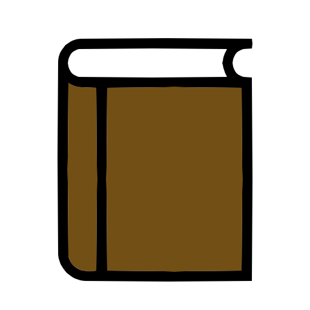

Fodorné Vincze Anna weboldala
Főoldal
Rólam
Média
Szolgáltatások
Írások
Ajánlott könyvek
Veszteségből nyereség, vereségből győzelem
Sárga világ
Ideje a gyógyítsának
Többszintű gyógyulás
Mit üzen a tested?
A gyógyító képzelet
Csontáttétből gyógyult beteg története
A békés harcos útja
Az elme gyógyító ereje
Falevelek
Szabadon, örömmel, szeretettel
A rák ellen
A gyógyító család
Írásaim
Belső ösvény
Csillogó kövek és csevice
Az élet fája
A fájdalom
Gyémántok
Kezek emelnek az égig...
Kiégés ellen, egy jó csapatban...
KOVÁSZ Tábor a Regea Alapítvány szervezésében
Lélek-konyha és a Belső Gyermek
Megbetegítő titkok
Megszületett
Mi nagyokat szoktunk álmodni...
Mit üzen nekünk a betegség?
Negatív érzéseink kontra pozitív gondolkodás
Pillanatok a tisztáson
A pozitív gondolkodásról
A pszichológusnál
Gondolatok a Simonton-tréningről
Táborzáró gondolatok 2015.
Te magad vagy a Csoda!
A vasalódeszkák álmai